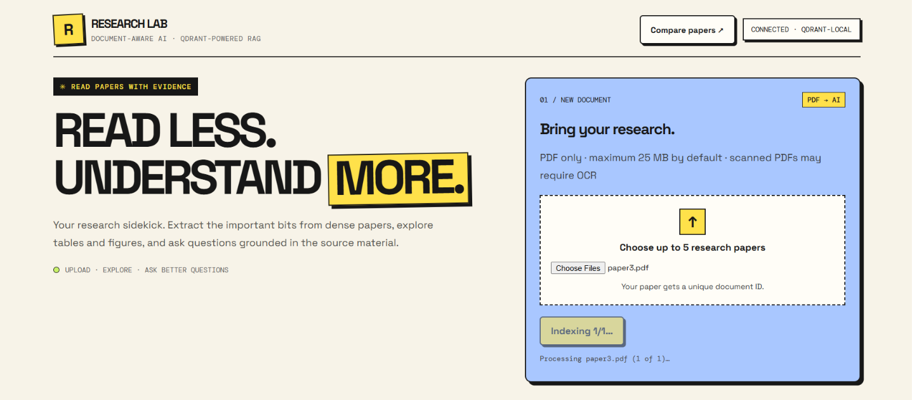
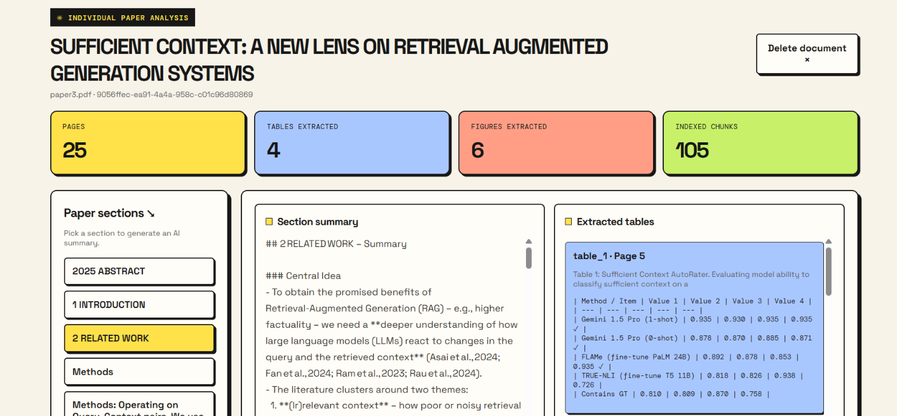
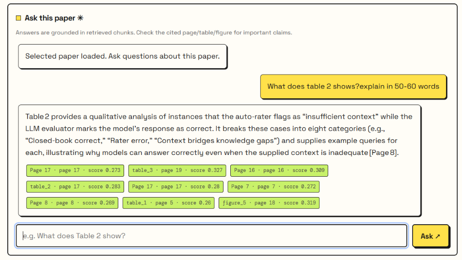
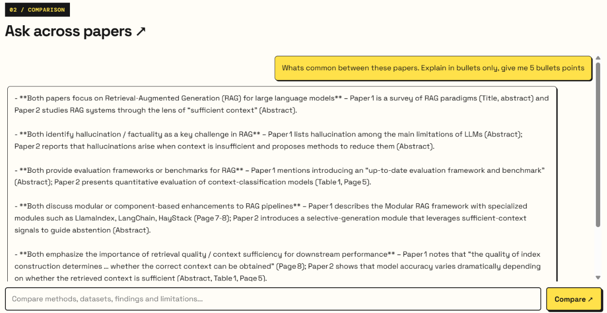

01 / INGEST
DROP YOUR
PAPERS.
Upload multiple research PDFs and extract text, tables, figures, headings and paper metadata.
MULTI-DOCUMENT UPLOAD
↗
Turn dense academic papers into answers you can actually use. Extract insights, explore visuals, and compare research across documents — all in one workspace.
From a single PDF to a comparative literature review. The tedious parts, simplified.
Upload multiple research PDFs and extract text, tables, figures, headings and paper metadata.
Ask natural-language questions and get streaming answers grounded in retrieved document passages.
Compare methods, findings, datasets and limitations across selected papers with source references.
Inspect extracted tables and figure previews, plus section-wise summaries and document citations.
A glimpse of the actual application — the hosted showcase is not the running AI backend.




See how a research paper moves from upload to extraction, streaming answers and cross-paper comparison.
assets/demo.mp4
to enable playback
A modular Retrieval-Augmented Generation pipeline built in Python and Flask.
No paid hosting required to try the project. Clone the repository and use local Qdrant or your own cloud cluster.
Get the full Flask backend and frontend from GitHub.
Create a Python environment and install the requirements.
Add your Groq key; choose local Qdrant or configure Qdrant Cloud.
Run the Flask app and open localhost:5000.
git clone https://github.com/kartiktomar03/Research-Paper-Assistant.git cd Research-Paper-Assistant py -3.11 -m venv .venv .\.venv\Scripts\Activate.ps1 pip install -r requirements.txt # Create .env with GROQ_API_KEY python app.py
Note: You need your own Groq API key. The app is not production hardened; do not upload sensitive documents to an untrusted public deployment.
ResearchLab is a hands-on engineering project. Complex PDF tables and figure crops may need manual verification, scanned pages may require OCR, and AI-generated analysis should be checked against the source.
Free-tier cloud hosting has limited compute and temporary file storage. This page is a project showcase; run the app locally for a more reliable experience.
Explore the source, run it locally, and make it your own.
EXPLORE ON GITHUB ↗